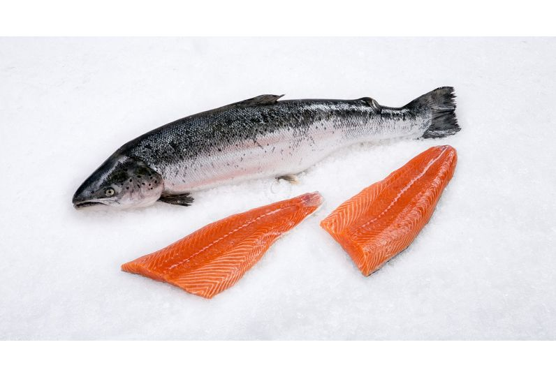

Justin's Maple-Glazed Salmon with Pineapple

Description
Broiled salmon is incredibly moist and tender and perfect for a weeknight meal. The cooking time will depend on the thickness of the salmon; I suggest checking for doneness after 10 minutes.
I made this with no alterations. I did just place the wedge of lemon on the fish as I couldn't find any instructions about what to do with it. Served with fresh green beans on the side, and it made a nice supper. Thanks for the recipe.
Ingredients
- 4 tablespoons maple syrup, divided
- 1 tablespoon low-sodium soy sauce (such as Bragg®)
- 1 tablespoon fresh lemon juice
- 1 teaspoon freshly grated ginger
- 2 (6 ounce) skin-on center-cut salmon fillets
- ¼ teaspoon Cajun seasoning
- 2 slices fresh pineapple, halved
- 2 wedges lemon
Steps:
- Combine 2 tablespoons maple syrup, soy sauce, lemon juice, and ginger in a bowl. Place salmon into the marinade and turn to coat. Marinate for at least 15 minutes, but no longer than 30.
- For the glaze, mix remaining 2 tablespoons maple syrup and Cajun seasoning together in a bowl. Set aside until ready to use.
- Set an oven rack about 6 inches from the heat source and preheat the oven's broiler to low.
- Line a rimmed baking sheet with foil and lightly spray with cooking spray. Remove the salmon from the marinade and pat dry with paper towels. Place salmon, skin side-down, and pineapple, onto the sheet and brush with the glaze.
- Broil in the preheated oven until salmon easily flakes with a fork and reaches an internal temperature of 145 degrees F (62 degrees C), 13 to 15 minutes.